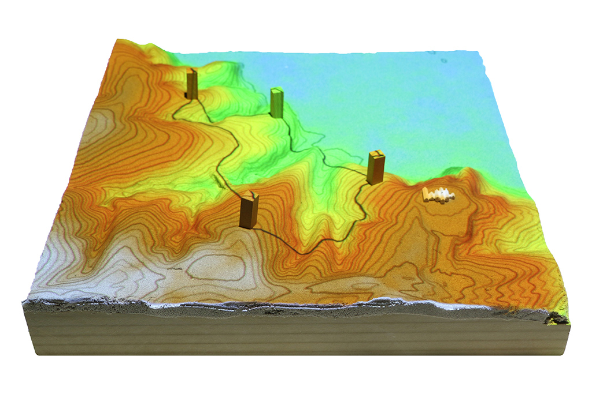
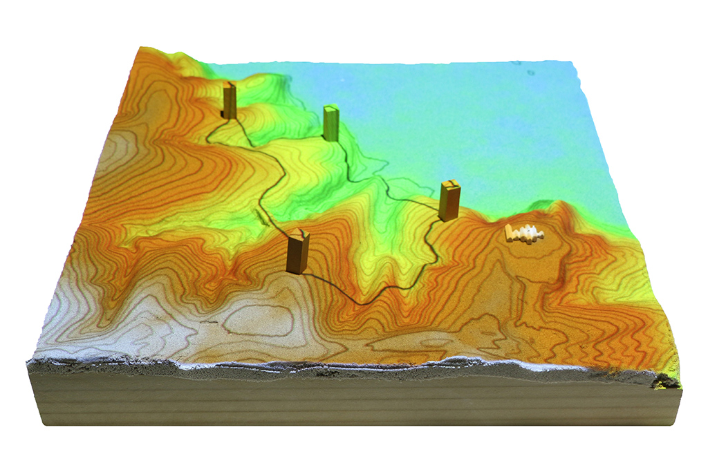
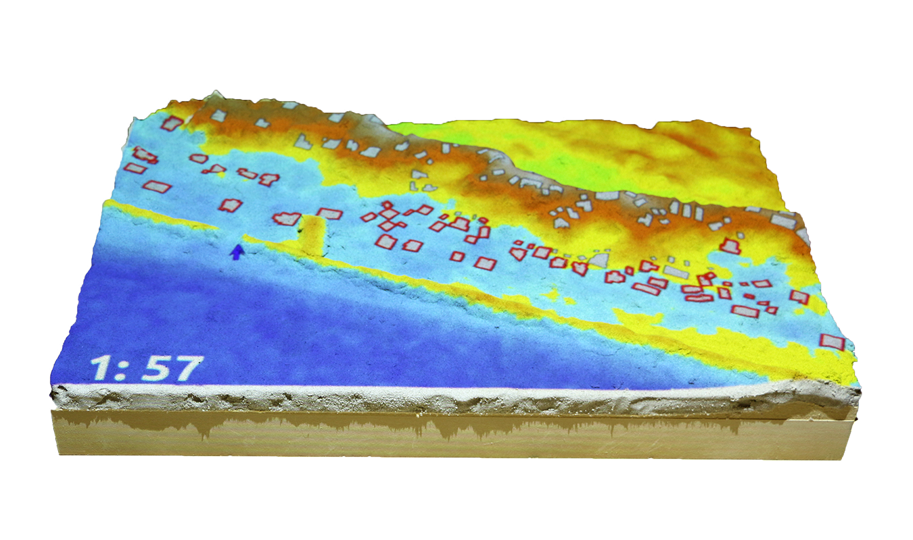
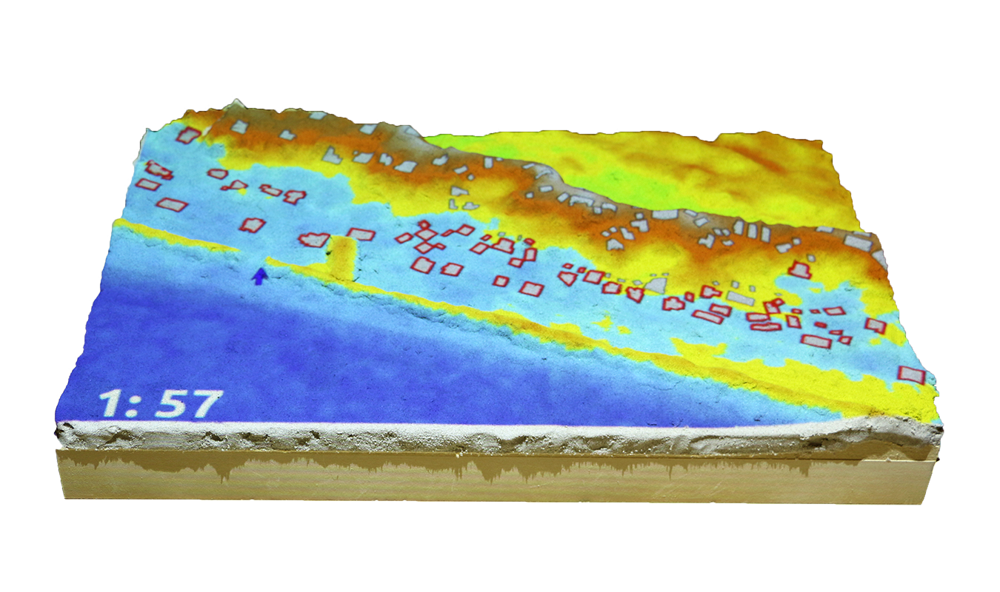

Tangible Landscape
a tangible interface for geospatial modeling
Brendan Harmon

PhD in Design | NCSU | 2013-2017
MPhil in Geography | University of Oxford | 2010-2012
MLA | Harvard Graduate School of Design | 2005-2008
| Pros | Cons |
|---|---|
| Intuitive | Laborious to reproduce |
| Expressive | Imprecise |
| Imaginative | No quantitative analysis |
Tools for geospatial data management and analysis, image processing, graphics and maps production, spatial modeling, & visualization
GRASS GIS Command Line Interface (CLI) & Graphical User Interface (GUI)
| Pros | Cons |
|---|---|
| Repeatable | Unintuitive |
| Precise | Complex software |
| Large datasets | Complex workflows |
| Quantitative analysis | Learning curve |
Carlo Ratti et al. 2004. Tangible User Interfaces (TUIs): A Novel Paradigm for GIS. Trans. GIS 8, 4 (2004), 407–421. DOI:http://dx.doi.org/10.1111/j.1467-9671.2004.00193.x
Couple physical and digital data
David Kirsh. 2013. Embodied cognition and the magical future of interaction design. ACM Trans. Comput. Interact. 20, 1 (2013), 3:1–3:30. DOI:http://dx.doi.org/10.1145/2442106.2442109

Couple physical and digital geospatial models

Urp, 1996-2001
John Underkoffler and Hiroshi Ishii. 1999. Urp: a luminous-tangible workbench for urban planning and design. In CHI ’99 Proceedings of the SIGCHI conference on Human Factors in Computing Systems. New York, New York, USA: ACM Press, 386–393. DOI:http://dx.doi.org/10.1145/302979.303114


Sandscape & Illuminating Clay, 2002-2004
H. Ishii, C. Ratti, B. Piper, Y. Wang, A. Biderman, and E. Ben-Joseph. 2004. Bringing Clay and Sand into Digital Design — Continuous Tangible user Interfaces. BT Technol. J. 22, 4 (2004), 287–299. DOI:http://dx.doi.org/10.1023/B:BTTJ.0000047607.16164.16


XenoVision Mark III Dynamic Sand Table, 2004
Source: Xenotran


Tangible Geospatial Modeling System, 2006-2010
Laura Tateosian, Helena Mitasova, Brendan A. Harmon, Brent Fogleman, Katherine Weaver, and Russell S. Harmon. 2010. TanGeoMS: Tangible Geospatial Modeling System. IEEE Trans. Vis. Comput. Graph. 16, 6 (2010), 1605–12. DOI:http://dx.doi.org/10.1109/TVCG.2010.202
Source: NCSU GeoForAll Lab

Collaborative Design Platform, 2011-present
Gerhard Schubert, Sebastian Riedel, and Frank Petzold. 2013. Seamfully connected: Real working models as tangible interfaces for architectural design. In Global Design and Local Materialization. Springer-Verlag Berlin Heidelberg, 210–221. DOI:http://dx.doi.org/10.1007/978-3-642-38974-0_20
Source: Dr.-Ing. Gerhard Schubert, Technische Universität München

Augmented Reality Sandbox, 2012-present
Source: Oliver Kreylos, UC Davis

inFORM, 2013-present
Sean Follmer, Daniel Leithinger, Alex Olwal, Akimitsu Hogge, and Hiroshi Ishii. 2013. inFORM: dynamic physical affordances and constraints through shape and object actuation. In Proceedings of the 26th annual ACM symposium on User interface software and technology - UIST ’13. New York, New York, USA: ACM Press, 417–426. DOI:http://dx.doi.org/10.1145/2501988.2502032
The Augmented REality Sandtable (ARES), 2015-present
Charles R. Amburn, Nathan L. Vey, Michael W. Boyce, and MAJ Jerry R. Mize. 2015. The Augmented REality Sandtable ( ARES ). US Army Research Laboratory. ARL-SR-0340. DOI:http://dx.doi.org/10.13140/RG.2.1.2685.0006
Source: US Army Research Laboratory
2013-present
With Tangible Landscape you can hold a GIS in your hands - feeling the shape of the earth, sculpting its topography, and directing the flow of water.

Tangible Landscape couples a digital and a physical model through a continuous cycle of 3D scanning, geospatial modeling, and projection

with Kinect sensor

| surface | points | lines | areas | areas |
A collaborative environment for tangible freeform modeling, object detection, real-time geospatial analytics, 3D rendering, and virtual reality
Payam Tabrizian, Anna Petrasova, Brendan Harmon, Vaclav Petras, Helena Mitasova, and Ross Meentemeyer. 2016. Immersive Tangible Geospatial Modeling. In Proceedings of the 24th ACM SIGSPATIAL International Conference on Advances in Geographic Information Systems. GIS ’16. San Francisco, CA: ACM, 88:1-88:4. DOI:http://dx.doi.org/10.1145/2996913.2996950
Visibility and line of sight


Solar irradiation and cast shadows

 

Optimized trail routing between waypoints based on energetics, topography, and cost maps with feedback including trail slopes and viewsheds


Designing and testing fire breaks


Modifying land cover with colored felt
Simulation of urban growth scenarios with FUTURES model

 

Save houses from coastal flooding by building coastal defenses
Structured problem-solving with rules, challenging objectives, and scoring


Manage the spread of termites across a city by treating city blocks using a model of biological invasion in R
Through a series of experiments we have shown that tangible modeling
Brendan A. Harmon. 2016. Embodied Spatial Thinking in Tangible Computing. In TEI ’16: Proceedings of the Tenth International Conference on Tangible, Embedded, and Embodied Interaction. Eindhoven, Netherlands: ACM Press, 693–696. DOI:http://dx.doi.org/10.1145/2839462.2854103
Brendan A. Harmon, Anna Petrasova, Vaclav Petras, Helena Mitasova, and Ross K. Meentemeyer. 2016. Tangible Landscape: cognitively grasping the flow of water. In The International Archives of the Photogrammetry, Remote Sensing and Spatial Information Sciences. Prague: International Society of Photogrammetry and Remote Sensing. DOI:http://dx.doi.org/10.5194/isprsarchives-XLI-B2-647-2016
Brendan A. Harmon et al. 2017. Cognitively Grasping Topography with Tangible Landscape. In review.
Planting tangible 3D trees with realtime rendering
In-situ robotic fabrication for Tangible Landscape

Bi-directionally coupling physical and digital landscapes
360 photospheres
360 videospheres
3D modeling for VR
Anna Petrasova, Brendan Harmon, Vaclav Petras, and Helena Mitasova. 2015. Tangible Modeling with Open Source GIS, Springer International Publishing. DOI:http://dx.doi.org/10.1007/978-3-319-25775-4
Anna Petrasova, Brendan A. Harmon, Vaclav Petras, and Helena Mitasova. 2014. GIS-based environmental modeling with tangible interaction and dynamic visualization. In D. P. Ames & N. Quinn, eds. Proceedings of the 7th International Congress on Environmental Modelling and Software. San Diego, California, USA: International Environmental Modelling and Software Society.
Brendan A. Harmon. 2016. Embodied Spatial Thinking in Tangible Computing. In TEI ’16: Proceedings of the Tenth International Conference on Tangible, Embedded, and Embodied Interaction. Eindhoven, Netherlands: ACM Press, 693–696. DOI:http://dx.doi.org/10.1145/2839462.2854103
Brendan A. Harmon, Anna Petrasova, Vaclav Petras, Helena Mitasova, and Ross K. Meentemeyer. 2016. Tangible Landscape: cognitively grasping the flow of water. In The International Archives of the Photogrammetry, Remote Sensing and Spatial Information Sciences. Prague: International Society of Photogrammetry and Remote Sensing. DOI:http://dx.doi.org/10.5194/isprsarchives-XLI-B2-647-2016
Payam Tabrizian, Anna Petrasova, Brendan Harmon, Vaclav Petras, Helena Mitasova, and Ross Meentemeyer. 2016. Immersive Tangible Geospatial Modeling. In Proceedings of the 24th ACM SIGSPATIAL International Conference on Advances in Geographic Information Systems. GIS ’16. San Francisco, CA: ACM, 88:1--88:4. DOI:http://dx.doi.org/10.1145/2996913.2996950

| Type | Product | Cost |
|---|---|---|
| Computer | System 76 Oryx Pro | $1500 |
| Projector | Optoma ML750 WXGA 700 DLP LED | $500 |
| 3D sensor | Xbox One Kinect | $100 |
| Kinect Adapter for Windows | $50 | |
| Stand | Avenger 40-Inch C-Stand with Grip Kit | $200 |
| Avenger F800 3-Inch Baby Wall Plate | $10 | |
| Kupo 4 Way Clamp | $50 | |
| Kupo Baby 5/8-Inch (16mm) Receiver for 3 & 4 Way Clamp | $12 | |
| Avenger F810 3-Inch Baby Wall Plate with Swivel Pin | $36 | |
| Avenger D520L 40-Inch Extension Arm | $45 | |
| Peripherals | HDMI cable | $10 |
| Extension cord | $10 | |
| Modeling media | Waba Fun Kinetic Sand 11 Lbs | $50 |
| ~$2600 |


TUI GUI API
Model size: 135 mm x 135 mm
| Min | Max | Mean | Stdev | 1st Q | 3rd Q |
|---|---|---|---|---|---|
| -2.8 | 3.7 | -0.02 | 0.7 | -0.4 | 0.3 |
| Parameters | Small | Medium |
|---|---|---|
| Physical size | 23.5 cm x 23.5 cm | 34 cm x 34 cm |
| Cells | 13,456 | 26,235 |
| Binning | 0.51 s | 0.71 s |
| Interpolation | 0.74 s | 0.97 s |
| Water flow | 0.29 ± 0.01 s | 1.05 ± 0.05 s |
| Contours | 10.054 ± 0.004 s | 0.061 ± 0.004 s |
| Difference | 0.036 ± 0.002 s | 0.042 ± 0.003 s |
| Landforms | 0.034 ± 0.003 s | 0.084 ± 0.009 s |